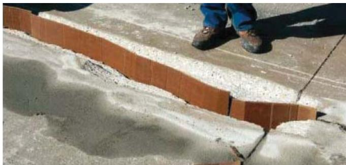
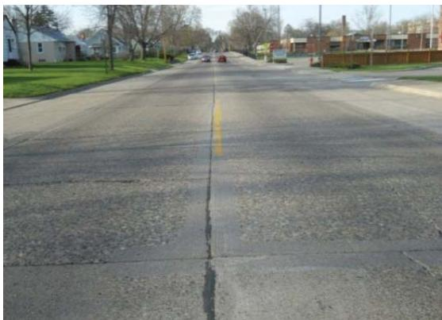
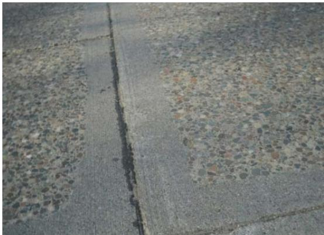
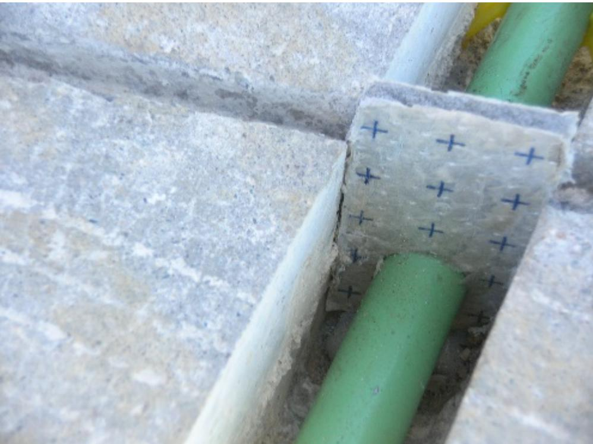
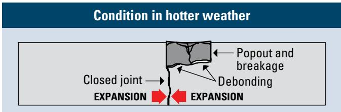
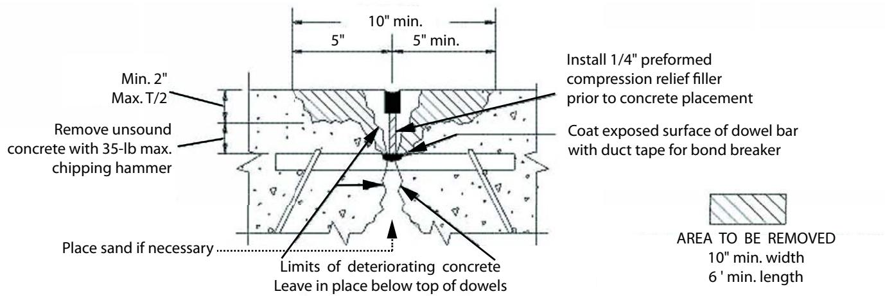

Partial-Depth Repair (PDR) Techniques
Partial‑Depth Repair (PDR) techniques are targeted treatments for concrete pavements in which the distress is confined to the upper one‑third to one‑half of the slab thickness, such as joint spalling, edge or joint delamination, early D‑cracking, scaling, and other near‑surface failures [1][5][6]. By removing the unsound concrete and filling the cavity with a compatible rapid‑setting cementitious material that is bonded to sound underlying concrete, PDR restores structural continuity, ride quality, and proper joint geometry while preventing water infiltration and point loading, thereby extending the service life of the repaired area by roughly ten to fifteen years [3][7][8]. The method is limited to slabs with sound surrounding concrete and functional load‑transfer devices, requires clean, tapered edges created by milling or saw‑cutting, thorough substrate preparation, and re‑establishment of the original joint opening before curing and, when appropriate, diamond grinding [5][9][10].
Sources (10)
Purpose and treatment objectives
Partial‑Depth Repair (PDR) techniques are used to treat concrete pavements that show localized, shallow distress confined to the upper portion of the slab—typically the top one‑third to one‑half of its thickness. The targeted conditions include joint deterioration and edge/joint spalls caused by improper sawing or blade use, as well as surface‑layer defects such as small spalled or delaminated areas, early‑stage D‑cracking along joints, non‑working cracks, and other isolated near‑surface damage that does not involve significant movement across the joint or reinforcement. By removing the unsound concrete and replacing it with a compatible repair material, PDR restores structural continuity, ride quality, and joint function without resorting to full‑depth reconstruction. [1][3][5][6][7][8][9][10]
The figure below illustrates a joint board used in partial-depth repair applications.

Installation of a joint board in a concrete pavement repair. [1]The image displays a longitudinal section of a concrete pavement where the upper layer has been removed to expose the underlying slab. A brown, corrugated board is positioned vertically within the cavity at the interface between the existing and repaired sections. This component serves as a joint board or compressible insert to re-establish the joint geometry during the repair process.
[1] — Ch. 5 (pp. 28–30); [3] — Ch. 5 (p. 290); [5] — Step 1. Determine Repair Bound… (pp. 19–20), Design Issues (p. 16), Deterioration around Patch (p. 35), Project Selection (p. 11); [6] — Partial-Depth Repair (pp. 30–31); [7] — Ch. 4 (pp. 228–230), Ch. 19 (p. 467); [8] — Ch. 1 (pp. 21–22), Ch. 5 (pp. 99–118), Ch. 12 (pp. 268–271); [9] — 2 Types and Mechanisms of Join… (pp. 19–26); [10] — Ch. 5 (pp. 92–108), Ch. 11 (pp. 216–218)
Across the guides, partial‑depth repair is described as a targeted treatment that removes unsound concrete and rebuilds the joint or panel to its original condition. The technique repairs localized damage, restores structural integrity and ride quality, and re‑establishes a proper seal that prevents water ingress and point loading. By arresting the spread of spalling and other shallow defects, PDR slows further deterioration, and because the repaired area can perform for many years, it also extends the pavement’s useful service life. [1][5][6][7][8][9][10]
[1] — Ch. 5 (pp. 29–30); [5] — Design Issues (p. 16), Introduction (p. 10); [6] — Partial-Depth Repair (pp. 30–31); [7] — Ch. 4 (pp. 228–230); [8] — Ch. 1 (pp. 21–22), Ch. 2 (pp. 27–28), Ch. 5 (pp. 99–118), Ch. 12 (pp. 268–271); [9] — 2 Types and Mechanisms of Join… (p. 26); [10] — Ch. 5 (pp. 92–108), Ch. 11 (pp. 216–218)
Distress characterization and causes
Across the guides, the distress addressed by Partial‑Depth Repair (PDR) techniques is located in the upper portion of concrete slabs—generally within the top one‑third to one‑half of the slab depth—and is tied to joints (longitudinal construction joints, contraction joints), cracks (both longitudinal and transverse), wheel paths, or edge areas. The condition manifests as small, shallow surface failures such as spalling, scaling, delamination, edge spalls, or intrusion of incompressible material. Extent ranges from minor edge spalls that are limited to a small area, to low‑severity spalling less than three inches wide, moderate spalling 3–6 inches wide, and in the most severe cases “severe deterioration at every joint” that can be pervasive across all joints. Severity therefore spans minor localized patches to widespread joint damage that creates vertical restrictions. Progression is described as slow for low‑severity spalling—potentially advancing over ten to fifteen years—but moderate spalling “requires immediate PDRs,” and deeper or faster‑progressing deterioration linked to poor mix durability, saturated subgrade, or aggressive deicing can jeopardize safety and may demand full‑depth repair. Safety and operational consequences include point loading and compression failure of the repaired area, restricted vehicle heights, water infiltration that further compromises serviceability, and degraded ride quality; restoring joint openings to match adjacent joints “prevents point loading and compression failures,” while repairing the surface restores structural integrity and improves safety. [1][3][5][7][8][10]
The following figure illustrates the long-term performance of these techniques, showing twenty-year-old longitudinal and transverse partial-depth repairs in Hopkins, MN.

Longitudinal and transverse partial-depth repairs in a concrete pavement. [5]The image displays a concrete roadway featuring distinct linear patches that follow the longitudinal joint and intersect with transverse joints, representing areas where surface material has been replaced. These repairs are defined as the removal and replacement of small areas of deteriorated concrete pavement to restore structural integrity and improve ride quality. The visible repair lines demonstrate how these targeted treatments restore a well defined, uniform joint-sealant reservoir to keep incompressible material and water out.
[1] — Ch. 5 (pp. 29–30); [3] — Ch. 5 (p. 290); [5] — Project Selection (p. 11); [7] — Ch. 4 (pp. 228–230); [8] — Ch. 5 (pp. 99–118); [10] — Ch. 5 (p. 92)
The distress that Partial‑Depth Repair (PDR) techniques aim to remediate is driven by a suite of moisture‑related, material‑deficiency and construction‑error mechanisms. Water infiltration and inadequate drainage are repeatedly identified: the guides stress the need to “ensure a good bond between the existing concrete and the repair material to prevent water infiltration,” note that “proper draining of the joints, removal of any backer rods in the joint” is required, and warn that “if water can be trapped adjacent to a marginal concrete mixture…damage will indeed continue to develop.” Saturated joints combined with a “moderate to poor air void system” or an “inadequate air‑void system” prevent moisture escape, leading to spalling. Poor bond at the repair interface further entraps water (“It is likely that an intimate bond is required between the repair material and the existing concrete to prevent the entrapment of water between them”). Excessive point loading from incorrectly sized joint openings also accelerates failure (“re‑establish the pavement joint with the same opening dimension as the in‑place adjacent joint”).
Construction errors at joints create weakness: “Edge spalls (or joint spalls) can occur due to several reasons, including early joint sawing, use of an incorrect blade type, or poor operation of the saw.” Early cutting and improper tooling weaken slab edges and promote delamination.
Material deficiencies are cited across sources: “joint deterioration arises due to substandard, nondurable concrete,” “the presence of MRD, the use of nondurable concrete mixtures,” and “Spalling caused by weak concrete, clay balls, or mesh reinforcing steel located too close to the surface.” An insufficient air‑void system produces freeze‑thaw damage (“Spalling that is isolated in the upper portion of the slab and caused by freeze‑thaw damage as a result of inadequate air‑void system”) and thermal stresses (“spalling distresses that tend to occur under repeated thermal stresses, freezing and thawing, and traffi c loading”). Intrusion of incompressible material into joints or cracks is repeatedly noted (“Spalling caused by intrusion of incompressible materials into the joint or crack,” “Spalling caused by the intrusion of incompressible materials into the joints or cracks”).
Localized surface‑level weaknesses such as scaling, high steel content, and reinforcing steel too close to the surface also generate top‑down distress (“Surface scaling or deterioration that is limited to the upper one‑third of the slab and caused by reinforcing steel that is too close to the surface or by an inadequate air void system”). Poor consolidation, inadequate curing, and improper finishing further degrade concrete (“Spalling caused by poor consolidation, inadequate curing, or improper finishing practices”).
Support deficiencies amplify these mechanisms: “Improve slab support conditions” and moisture penetration of supporting layers lead to spalling, cracking and faulting. Foundation cut‑off layers that create voids beneath slabs allow upward moisture migration (“Typically, incremental cracking is seen in systems that have some form of cut‑off layer in the foundation”).
When material‑related distress such as early D‑cracking dominates, the underlying cause shifts from moisture to structural inadequacy, making shallow repairs unsuitable (“not recommended when the main cause of joint deterioration is D‑cracking or other material‑related distress”). [1][3][5][6][7][8][9][10]
[1] — Ch. 5 (pp. 29–30); [3] — Ch. 5 (p. 290); [5] — Deterioration around Patch (p. 35), Introduction (p. 10), Project Selection (p. 11); [6] — Partial-Depth Repair (pp. 30–31); [7] — Ch. 4 (pp. 228–230); [8] — Ch. 1 (pp. 21–22), Ch. 5 (pp. 99–102); [9] — 2 Types and Mechanisms of Join… (pp. 18–26); [10] — Ch. 5 (pp. 92–93)
Applicability and treatment selection
The guides agree that partial‑depth repair (PDR) is intended for concrete pavements—jointed plain, mesh‑dowelled, or continuously reinforced—in which the distress is limited to the upper portion of the slab. The damage must be confined to roughly the top one‑third to one‑half of the slab thickness and the surrounding concrete must remain sound with functional load‑transfer devices. PDR is most suitable where traffic stresses are within the capacity of a repaired slab, typically compatible with an anticipated service life of ten to fifteen years; extreme overloads are discouraged. Environmental conditions that favor use include regions subject to repeated thermal cycles and freeze‑thaw action, especially cold‑weather areas where joint or crack spalling is less than six inches wide, provided the air‑void system can adequately drain moisture. Site constraints such as limited vertical clearance, impracticality of milling, or the need to preserve existing joint openings also make PDR preferable to full‑depth reconstruction. The method requires sound concrete both surrounding and beneath the defect, minimal movement at joints, cracks, dowel bars, or reinforcing steel, and an adequate air‑void quality; where subsurface deterioration, significant joint movement, poor drainage, or saturated subgrades exist, a full‑depth repair is recommended instead. [1][5][7][8][10]
[1] — Ch. 5 (pp. 29–30); [5] — Design Issues (p. 16), Introduction (p. 10), Project Selection (p. 11); [7] — Ch. 4 (pp. 228–230); [8] — Ch. 5 (pp. 101–118), Ch. 12 (pp. 268–271); [10] — Ch. 5 (pp. 92–93), Ch. 11 (pp. 216–218)
Partial‑depth repair should be avoided whenever the concrete distress extends beyond the shallow zone that the technique can effectively treat. The guides agree that repairs are limited to the upper one‑third to one‑half of slab thickness: “In the past, partial-depth repairs were considered only if the distress was limited to the upper one-third of the slab and the existing load-transfer devices (if any) were still functional.”; “All PDR should be in the top one-half of the pavement depth to have the intended service life of 10 to 15 years.”; “or where damage is more than one‑third to one‑half the depth of the slab”. When cores reveal loss greater than half the slab thickness, full‑depth replacement is required: “If cores show evidence of flaking, complete petrographic analysis to determine air voids and spacing; if poor air system, go to full-depth repair”; “Sound concrete must be present both surrounding and beneath the PDR. If sound concrete is not present, FDR should be considered”. Young pavements (under about seven years) with flaking joint mortar and a deficient air‑void system also preclude PDR: “If measurable spalling is evident in pavements less than 7 years old and the concrete mortar in the joints show evidence of flaking, a petrographic analysis should be done … If the air void system is poor, and is unable to drain the saturated joints, then PDR is not the proper repair.” Extensive or severe spalling that exceeds low‑severity limits makes partial‑depth work unsuitable: “If nearly every joint has severe spalling > 6 in. wide, see no. 5 and no. 6”; “When spalling is severe or affects an excessive length of a slab, replacement of the slab should be considered”; “Full-depth repairs are almost always more cost-effective for isolated surface distresses in overlays 6 in. thick or less or with a joint spacing of 6 ft or less.” Material‑related distress such as D‑cracking, alkali‑silica or alkali‑carbonate reaction, dowel‑bar misalignment or lockup, and other MRD also require deeper rehabilitation: “Spalling caused by D-cracking or reactive aggregates such as alkili-silica reactive (ASR), alkili-carbonate reactive (ACR), ett ringite, etc.”; “Spalling caused by dowel bar misalignment or lockup”; “Spalling caused by MRD, such as D-cracking or reactive aggregate.” When the damage involves joint movement, transverse or longitudinal cracks, or proximity to reinforcing steel, the patch material cannot accommodate the stresses: “Partial-depth repairs replace deteriorated concrete only, and most repair materials can not accommodate the movements across working joints and cracks, load transfer devices, or reinforcing steel without experiencing high stresses and material damage.”; “If the longitudinal steel is damaged or ruptured during the concrete removal process, FDRs should instead be performed.” Site constraints such as vertical clearance limits or impractical milling also shift the decision to full‑depth or reconstruction: “Severe deterioration at every joint, with vertical restrictions and/or where milling of the pavement would be problematic”; “Recycle pavement and construct new pavement”. Finally, poor construction quality or materials that do not meet durability requirements undermine PDR performance: “improper construction and placement techniques”; “when poor materials or workmanship are encountered, partial‑depth repairs may fail in as little as 2 to 3 years”. [1][3][5][6][7][8][9][10]
[1] — Ch. 5 (pp. 29–30); [3] — Ch. 5 (p. 290); [5] — Deterioration around Patch (p. 35), Introduction (p. 10), Project Selection (p. 11), Repair Failures (p. 16); [6] — Partial-Depth Repair (pp. 30–31); [7] — Ch. 4 (pp. 228–230); [8] — Ch. 2 (pp. 27–28), Ch. 5 (pp. 99–118), Ch. 12 (pp. 268–271); [9] — 2 Types and Mechanisms of Join… (p. 26); [10] — Ch. 5 (pp. 92–93), Ch. 11 (pp. 216–218)
Condition assessment and timing
The assessment begins with a comprehensive visual survey that looks for surface‑level distress such as joint spalling, map cracking, scaling or moisture‑related damage. The guides state that “Partial-depth repairs are appropriate for concrete pavement distresses that are confined within the upper half of the concrete slab.” and note that “Correct localized distress that is contained in the upper 1/3 of the slab—In concrete pavements, it is not uncommon to have localized areas of distress that are contained in the upper 1/3 of the slab thickness.” Width of spalls is measured; spalls “less than 3 inches wide measured to the face of the joint” are low severity, while “spalling reaches a moderate level of 3 to 6 inches wide (from the face of the joint)” triggers further evaluation. Depth assessment relies on core sampling. The requirement is that “cores should be taken to determine if the deterioration is in the top one‑third to one‑half of the pavement thickness.” When cores are extracted, they are examined for flaking; “If cores show evidence of flaking, complete petrographic analysis to determine air voids and spacing; if poor air system, go to full-depth repair.” In addition, “Coring of existing pavement can help a designer determine if a partial‑depth repair is the correct repair,” and “It is advisable to take core samples in the spall to determine the depth of degradation and the type and condition of the concrete and subbase below the spalled area.” Petrographic work may be required: “petrographic analysis should be done to determine the air void spacing and volume in the joints.” When the measured depth is less than half the slab thickness, the guides state “If deterioration is < T/2, complete partial-depth repair.” Non‑destructive acoustic inspection is performed next. The guides describe “"sounding" the concrete with a steel pipe, chains, or a hammer” and also note that “Determining the boundaries for PDRs is often accomplished by “sounding” the concrete with a solid steel rod, a heavy chain, or a heavy hammer to determine unsound areas.” The response is interpreted: “Areas yielding a sharp metallic ringing sound are judged to be acceptable, while those emitting a dull or hollow thud are delaminated or unsound,” and the same wording appears in another source as “"Areas yielding a sharp metallic ringing sound are judged to be acceptable, while those emitting a dull or hollow thud sound are delaminated or unsound".” Where acoustic results are ambiguous, a sand‑bounce verification is used: “"drop a small amount of sand on the questionable concrete and hit the concrete with a hammer, watching the sand bounce in delaminated sections."” Additional nondestructive checks include chain dragging: “Chain dragging determines delamination or unsound concrete.” A muffled or dull sound during dragging indicates concern: “If the sound is muffled or dull, there is a high probability of unsound concrete or localized delamination.” Age of the pavement is also considered; sections younger than seven years are directed to full‑depth repair: “If pavement < 7 yr old, go to full-depth repair.” Finally, the extent of treatment is mapped. Repair limits are extended beyond detected distress: “"repair boundaries should extend 75 mm (3 in) beyond the detected delaminated or spalled area"” and minimum patch dimensions are required: “"A minimum repair length of 250 mm (10 in) and a minimum repair width of 100 mm (4 in) are recommended".” [1][5][7][8][9][10]
[1] — Ch. 5 (p. 29); [5] — Step 1. Determine Repair Bound… (pp. 19–20), Design Issues (p. 16), Deterioration around Patch (p. 35), Project Selection (p. 11); [7] — Ch. 4 (pp. 197–230), Ch. 19 (p. 467); [8] — Ch. 5 (pp. 99–118), Ch. 12 (pp. 268–271); [9] — 2 Types and Mechanisms of Join… (p. 18); [10] — Ch. 5 (pp. 93–97), Ch. 11 (pp. 216–218)
The guides agree that Partial‑Depth Repair is indicated only while the concrete slab is still structurally sound and the deterioration is shallow and localized. The treatment is appropriate when joint or crack spalling, surface scaling, delamination or similar distress is confined to the upper portion of the slab—generally no deeper than the top one‑third to one‑half of the slab thickness—and the affected area is limited in size (e.g., minor edge spalls, isolated spalls less than six inches across, or openings under three inches that can be extended with a 3‑inch repair boundary). The distress may be evident as visible spalling or may be detected by a dull/hollow sounding tone indicating early delamination. Additional criteria from some sources require the pavement to be at least seven years old and for cores to confirm an adequate air‑void system, with the repair scheduled within two years of assessment. When these conditions are met, PDR—removing the unsound concrete and filling the cavity with a compatible cementitious material—provides a cost‑effective preservation option. [1][3][5][6][7][8][9][10]
The following figure illustrates a practical example of this technique.

Close-up of a partial-depth repair in Hopkins, MN, constructed in 1991 (photo taken 2011) [5]The image displays a concrete pavement surface featuring a longitudinal joint where the surrounding area exhibits exposed aggregate.
[1] — Ch. 5 (p. 29); [3] — Ch. 5 (p. 290); [5] — Step 1. Determine Repair Bound… (pp. 19–20), Deterioration around Patch (p. 35), Introduction (p. 10), Project Selection (p. 11); [6] — Partial-Depth Repair (pp. 30–31); [7] — Ch. 4 (pp. 228–230), Ch. 19 (p. 467); [8] — Ch. 2 (pp. 27–28), Ch. 5 (pp. 99–118), Ch. 12 (pp. 268–271); [9] — 2 Types and Mechanisms of Join… (pp. 19–26); [10] — Ch. 5 (pp. 92–93), Ch. 11 (pp. 216–218)
Materials and repair details
The guides agree that partial‑depth repair is the removal and replacement of small, shallow zones of deteriorated concrete pavement, limited to the upper half of the slab. The damaged area is first located with a solid steel rod, heavy chain or hammer and confirmed by coring; repair boundaries are marked at least 3 in (≈75 mm) beyond any delaminated, spalled or cracked zone, often extending 2–4 in beyond visible deterioration. Removal is performed with milling machines, saws, chipping tools or jack‑hammers not exceeding 37.5 lb to create a tapered edge. The exposed surface must be thoroughly cleaned—compressed air, media blasting, and in many cases a bonding agent applied immediately before placement.
Materials may include the pavement’s approved concrete mix or an approved repair mixture, rapid‑setting concrete, epoxy mortar, polymer‑modified concrete, or other cementitious or proprietary repair mixes that meet durability requirements. For cement‑based patches the repair should be at least 2 in deep; depth is generally specified as one‑third to one‑half of the panel thickness (≈5–6 in for thin overlays, ≥7 in for thicker sections) and never exceeds the top half of the slab.
Dimension requirements vary among sources. Typical minimums are a length of 10 in (250 mm) along the joint or crack and a width of 4 in (100 mm) away from it, with a depth of ≥2 in; some guides specify larger footprints of 15 in long by 10 in wide by 2 in deep. For continuously reinforced concrete pavement the patch should be at least 2 ft × 2 ft. When individual patches are spaced less than 24 in (600 mm) apart they may be combined into a single rectangular or square repair aligned with the existing joint pattern.
After placement the joint is rebuilt to match the adjacent joint opening, preserving the original dimension to avoid point loading. The repaired surface is often sealed at the edges and cured under saturated‑surface‑dry conditions, frequently using an accelerated curing compound. Finally, a diamond‑grinding pass is recommended to achieve a smooth riding surface and restore IRI. [1][3][5][6][7][8][9][10]
The following figure illustrates how these procedures facilitate load transfer restoration.

Dowel bar installation in a concrete pavement joint repair. [7]The image displays a close-up view of a longitudinal saw-cut slot in a concrete slab where green dowel bars are being installed to restore load transfer across the joint. A rectangular patch of material with blue cross markings has been placed over the opening, likely serving as a form or alignment guide for the repair process.
[1] — Ch. 5 (pp. 29–30); [3] — Ch. 5 (p. 290); [5] — Step 1. Determine Repair Bound… (pp. 19–20), Design Issues (p. 16), Introduction (p. 10); [6] — Partial-Depth Repair (pp. 30–31); [7] — Ch. 4 (pp. 228–230); [8] — Ch. 5 (pp. 101–118); [9] — 2 Types and Mechanisms of Join… (p. 26); [10] — Ch. 5 (pp. 93–97)
The guides collectively state that Partial‑Depth Repair (PDR) will perform satisfactorily only when the existing concrete is structurally sound, possesses an adequate air‑void system, and the distress is confined to the upper portion of the slab. Core sampling must verify that deterioration does not exceed roughly one‑third to one‑half of the slab thickness (often expressed as “the top one‑half of the pavement depth”) and that spalling widths remain within limits (typically less than six inches, with immediate repair required when 3–6 inches wide). The joint geometry must be restored to the original opening dimensions to avoid point loading and compression failure, and load‑transfer devices must remain functional.
Material compatibility requires that the repair mix match the approved concrete mixture for the pavement or an otherwise approved repair mixture, and that the coarse‑aggregate type of the repair material be compatible with that of the existing slab. The selected repair material—whether rapid‑setting concrete, epoxy mortar, polymer‑modified concrete, or other cementitious blend—must be durable, capable of forming an intimate bond with the substrate, and able to withstand limited movement; most repair materials cannot accommodate movements across working joints, cracks, load‑transfer devices, or reinforcing steel without high stresses.
Existing pavement conditions that affect PDR include overlay thickness and joint spacing (overlays ≥ 7 in thick or thinner overlays with joint spacing > 6 ft provide sufficient solid substrate for a fill depth of about one‑third to one‑half the panel thickness), presence of a satisfactory air‑void system for drainage, and absence of early‑stage material failures such as D‑cracking. All deteriorated concrete must be removed, the remaining surface cleaned (e.g., media blasting) and, when required, a bonding agent applied before placing the repair mix on a saturated‑surface‑dry base. Repair dimensions should extend at least three inches beyond the delaminated edge, with minimum lengths of ten inches and widths of four inches (or 250 mm × 100 mm), and depth of at least two inches to provide sufficient mass for bonding while preserving reinforcing steel.
When these condition, compatibility, and material‑property criteria are met, PDR can achieve service lives of ten to fifteen years—or longer with high‑quality materials and construction practices—whereas failure to meet any of them leads to rapid deterioration. [1][3][5][6][7][8][9][10]
[1] — Ch. 5 (pp. 29–30); [3] — Ch. 5 (p. 290); [5] — Design Issues (p. 16), Deterioration around Patch (p. 35), Introduction (p. 10), Project Selection (p. 11), Repair Failures (p. 16); [6] — Partial-Depth Repair (pp. 30–31); [7] — Ch. 4 (pp. 197–230); [8] — Ch. 2 (pp. 27–28), Ch. 5 (pp. 99–118), Ch. 12 (pp. 268–271); [9] — 2 Types and Mechanisms of Join… (pp. 18–26); [10] — Ch. 5 (pp. 92–108), Ch. 11 (pp. 216–218)
Treatment procedures
To execute a partial‑depth repair, the process begins with a field survey to verify pavement condition, locate delaminated or spalled zones, and establish repair boundaries. The guides state that “the first step in the design process is to conduct a field survey of the project to determine repair boundaries” and also advise “conducting a field survey (or video review) to verify pavement condition and estimate quantities, then take core samples to confirm the depth and extent of deterioration.” Repair zones are defined to extend at least three inches beyond each defect, with minimum dimensions of roughly 10 in. long by 4 in. wide (or 250 mm × 100 mm) and, for CRCP, a minimum 2‑ft‑by‑2‑ft area.
All weakened concrete within the defined zone is removed using milling, saw‑cutting, or jackhammering to create a clean, straight‑edged, tapered boundary. The guides describe that “Milling machines were used to remove the concrete in the distressed area and form a tapered edge around it” and that “The partial-depth repair process begins with sawcutting or milling the damaged area to create a clean and straightedged repair boundary.” Loose or unsound material is taken out until a sound substrate is exposed: “Any loose or unsound concrete is removed to expose a sound substrate.”
The exposed surface is then prepared thoroughly. First, loose particles are blown off with compressed air, followed by media‑blasting or an equivalent method to achieve a saturated‑surface‑dry condition; the guides note “Clean the exposed substrate thoroughly: first blow off loose material with compressed air, then media‑blast (or use other approved methods) to eliminate fine particles and any cement paste on reinforcement, achieving a saturated‑surface‑dry condition; apply a bonding agent if specified.” The area is also cleaned of dust, debris, and contaminants – “The repair area is then thoroughly cleaned to remove dust, debris, and contaminants that could affect adhesion” – and existing joints or cracks at the edges are sealed: “Seal any existing joints or cracks at the edges of the repair area.”
A compatible cementitious repair mix is prepared in accordance with manufacturer instructions. Acceptable materials include rapid‑setting concrete, epoxy mortar, polymer‑modified concrete, or other cement‑based mixes: “Depending on the severity of the damage and the specific requirements of the repair, various materials, such as rapid-setting concrete, epoxy mortar, or polymer-modified concrete, may be used to fill the void.” The mix is placed into the cavity, consolidated, and finished to match the surrounding pavement elevation, levelness, and texture: “The milled surface was cleaned and a cement grout was applied; then a cement-based repair material was applied” and the surface is finished to the required levelness and texture.
Curing is performed promptly and adequately. An elevated‑rate curing compound suitable for thin repairs is applied, and the patch is protected from adverse weather until design strength is achieved: “cure the patch adequately – using an elevated‑rate curing compound suitable for thin repairs – until the design strength is reached before reopening to traffic” and “paying attention to weather concerns during placement and curing.” Once cured, the repaired area restores structural integrity and ride quality. [5][6][8][10]
[5] — Introduction (p. 10); [6] — Partial-Depth Repair (pp. 30–31); [8] — Ch. 5 (pp. 101–118); [10] — Ch. 5 (pp. 93–108)
Implementation of Partial‑Depth Repair is governed by a defined sequence and several constraints. The process begins with locating delaminated zones using sounding tools—“solid steel rod, a heavy chain, or a heavy hammer”, “steel pipe, chains, or a hammer”, or a ball‑peen hammer—and confirming the extent of deterioration by dropping sand and striking the concrete (“drop a small amount of sand on the questionable concrete and hit the concrete with a hammer”). Repair limits are then marked and extended beyond the identified damage (“extend the limits of the repair boundaries 2 to 4 in. beyond the limits determined by sounding tests”) while meeting minimum dimensions (at least 250 mm long by 100 mm wide). If significant time elapses before work starts, the crew must re‑verify the boundaries.
Concrete removal is performed with “appropriate removal techniques (milling and removal or sawing/chipping and removal)” such as milling machines, saws, lightweight jackhammers (≤37.5 lb), or other equipment; this creates a clean, straight‑edged boundary (“The partial-depth repair process begins with sawcutting or milling the damaged area to create a clean and straight‑edged repair boundary”). The removed area is cleaned first with compressed air and then by media blasting (“thoroughly cleaned (through media blasting or other appropriate methods)”) to eliminate dust, debris, and contaminants (“The repair area is then thoroughly cleaned to remove dust, debris, and contaminants that could affect adhesion”).
Bonding of the new material requires a good interface (“It is also important to ensure a good bond between the existing concrete and the repair material to prevent water infiltration”) and may be aided by applying cement grout or a bonding agent (“The milled surface was cleaned and a cement grout was applied; then a cement‑based repair material was applied”). Saturated‑surface‑dry conditions are acceptable for effective bonding (“saturated surface‑dry conditions may be adequate for effective bonding”). The fresh patch is cured with high‑rate curing compounds and monitored until it reaches the specified design strength, at which point traffic can resume (“Open to traffic once it reaches the specified design strength; the use of maturity in monitoring concrete strength gain is recommended.”).
A final diamond‑grinding pass restores ride quality (“After the PDR is accomplished, diamond grinding (Figure 5-3) should be considered to produce a smooth riding surface”, “Diamond grinding (Figure 8.25) should be considered after repairs are made”).
Environmental constraints require that repairs remain within the upper half of the slab thickness for durability (“All PDR should be in the top one-half of the slab depth to have the intended service life of 10 to 15 years”) and be completed promptly, ideally within a two‑year window after detection (“partial-depth repairs begin as soon as possible and must be completed within a 2-year window”). Proper joint drainage and removal of backer rods are necessary in cold‑weather regions (“proper draining of the joints, removal of any backer rods in the joint”). Placement and curing must consider temperature and moisture conditions (“paying attention to weather concerns during placement and curing”).
Traffic management is a primary implementation constraint: “Allowable lane closures and traffic volume also affect production rates and costs,” and lanes must remain closed until the patch achieves design strength, influencing scheduling and cost. [1][5][6][7][8][10]
[1] — Ch. 5 (pp. 29–30); [5] — Step 1. Determine Repair Bound… (pp. 19–20), Costs/Payment Methods (p. 15), Introduction (p. 10); [6] — Partial-Depth Repair (pp. 30–31); [7] — Ch. 4 (pp. 228–230); [8] — Ch. 5 (pp. 101–118); [10] — Ch. 5 (pp. 92–108)
Quality and workmanship
Inspectors begin by confirming that the distress is appropriate for a partial‑depth repair. Core samples are taken from the spalled or delaminated area to determine the depth of concrete degradation, the condition of the surrounding concrete and subbase, and—if surface flaking is observed—to trigger petrographic analysis of air‑void content and spacing. The sampled material must show an adequate air‑void system and sound concrete both surrounding and beneath the repair; pavements younger than seven years or those with reactive aggregates or active working cracks are excluded and must be upgraded to full‑depth repair. The joint opening is verified to match the adjacent in‑place joint, and any existing joints or cracks adjacent to the repair are sealed to prevent water infiltration.
During preparation all deteriorated concrete is removed using milling, sawing or chipping until a sound substrate is exposed; the pavement is sounded before and after removal to ensure completeness. Saw‑cut or milled edges must be clean and straight, and the exposed surface is thoroughly cleaned—by media blasting, vacuuming or equivalent—to eliminate dust, debris, fine material and cement paste. The repair boundaries are set to fully enclose all longitudinal and transverse cracks and extend three to four inches beyond them. The substrate is placed in a saturated‑surface‑dry condition suitable for bonding, and a compatible bonding agent may be applied as required.
Installation inspection verifies that the selected patch material (rapid‑setting concrete, epoxy mortar or polymer‑modified concrete) conforms to design specifications, is properly mixed, and is fully consolidated with no voids. The material is placed to the original panel elevation, maintaining the joint opening dimension, and cured with an appropriate compound for thin repairs; maturity monitoring confirms that the specified design strength is achieved before traffic is allowed.
After placement the repaired section is finished to provide a smooth riding surface. Diamond grinding is performed to meet roughness criteria such as the International Roughness Index and to restore ride quality. The completed repair is observed for any early‑stage D‑cracking in surrounding slabs, which must not progress beyond acceptable limits, thereby ensuring the intended service life of ten to fifteen years. [1][5][6][7][8]
[1] — Ch. 5 (pp. 29–30); [5] — Deterioration around Patch (p. 35), Project Selection (p. 11); [6] — Partial-Depth Repair (pp. 30–31); [7] — Ch. 4 (pp. 197–230); [8] — Ch. 5 (pp. 101–118)
A satisfactory Partial‑Depth Repair (PDR) is confirmed when a series of verification steps and dimensional tolerances are satisfied. First, the pavement must be shown to be sound by sounding: “Areas yielding a sharp metallic ringing sound are judged to be acceptable—while those emitting a dull or hollow thud are delaminated or unsound.” Any zone that produces a dull response must be included in the repair area and removed. Core sampling is required when the distress depth is uncertain; cores must demonstrate “no flaking in core samples” and petrographic analysis must confirm an “adequate air‑void system with proper spacing.” The loss of concrete may not exceed one‑half of the slab thickness, otherwise a full‑depth repair is mandated.
The damage to be treated must be confined to the upper portion of the slab – traditionally no deeper than the top one‑third and, in current practice, acceptable up to the top half of the pavement thickness. This depth limitation underpins the expected service life of ten to fifteen years (or up to twenty years where high‑quality cementitious material is used). The repair zone must be sized so that a durable bond can develop: minimum dimensions are 250 mm (10 in) in length and 100 mm (4 in) in width, with a depth of at least two inches; many guides also recommend a practical minimum patch size of roughly 15 in × 10 in (or 2 ft × 2 ft for CRCP). Where multiple patches lie within about 600 mm (24 in), they should be merged.
Boundary tolerances require extending the cut beyond visible or sounded delamination. The guides specify extensions of at least three inches and, in some cases, an additional two to four inches beyond the limits determined by sounding tests. Existing joints intersecting the repair must be re‑established so that “re‑establish the pavement joint with the same opening dimension as the in-place adjacent joint,” preventing point loading. The exposed substrate must be completely milled or chipped, thoroughly cleaned (media blasting or equivalent), and sealed where necessary to achieve a sound bond and prevent water infiltration.
The selected cement‑based repair material must be compatible with the surrounding concrete’s air‑void system and placed after proper surface preparation. Curing practices and maturity monitoring are used to verify that the patch has reached the specified design strength before traffic is allowed. Post‑repair, diamond grinding is recommended to restore a smooth riding surface and meet roughness criteria.
Warranty and performance indicators complete the acceptance set: a 30‑day warranty applies when repairs are placed in sound concrete; failure within two to three years signals inadequate material selection or workmanship, while successful patches are expected to remain functional for ten to fifteen (or up to twenty) years without inducing additional cracking in adjacent joints. [1][5][7][8][10]
[1] — Ch. 5 (pp. 29–30); [5] — Step 1. Determine Repair Bound… (pp. 19–20), Deterioration around Patch (p. 35), Introduction (p. 10), Project Selection (p. 11), Repair Failures (p. 16); [7] — Ch. 4 (pp. 228–230); [8] — Ch. 5 (pp. 101–118); [10] — Ch. 5 (pp. 93–97)
Performance and service life
Partial‑depth repair (PDR) techniques remove the deteriorated concrete from the shallow portion of a slab—typically the upper one‑third to one‑half of its thickness—and replace it with a compatible, rapid‑setting cementitious material that bonds to sound underlying concrete. By creating a clean, saw‑cut or milled edge and thoroughly cleaning and texturing the substrate, the treatment restores the original surface elevation, reestablishes a uniform joint‑sealant reservoir, and improves slab support and load transfer. The repaired zone regains its load‑carrying function, reduces water infiltration, and, when followed by diamond grinding where appropriate, returns ride quality and International Roughness Index values to acceptable limits. Because the repair is limited in depth, it is more cost‑effective than full‑depth replacement and can extend the service life of the affected area for roughly ten to fifteen years, with some guides reporting durability of up to twenty years when sound construction practices and durable materials are used; conversely, poor material selection or workmanship may curtail performance to only two or three years. Overall, PDR improves pavement condition, functionality, and durability while contributing a measurable extension to the expected service life of the concrete pavement. [5][6][7][8][9][10]
The following figure illustrates a common PDR failure mode that occurs when a joint is prepared without a bond breaker.

Failure of a partial-depth repair in hotter weather due to a closed joint. [8]The figure illustrates the consequences of allowing repair material to infiltrate the joint opening below the bottom of the repair, which prevents the slab from expanding freely. The diagram shows that this restriction leads to compressive stresses during expansion, resulting in debonding, popouts, and breakage at the surface.
[5] — Design Issues (p. 16), Deterioration around Patch (p. 35), Introduction (p. 10), Project Selection (p. 11); [6] — Partial-Depth Repair (pp. 30–31); [7] — Ch. 4 (pp. 228–230); [8] — Ch. 1 (pp. 21–22), Ch. 2 (pp. 27–28), Ch. 5 (pp. 101–102); [9] — 2 Types and Mechanisms of Join… (p. 19); [10] — Ch. 5 (pp. 92–108)
The guides identify several recurring distresses that commonly limit the effectiveness of partial‑depth repairs. The most frequently reported failure is spalling—often described as edge or joint spalls—that can arise from early joint sawing, use of an incorrect blade type, or poor operation of the saw, and may be driven by dowel‑bar misalignment, lockup, D‑cracking, reactive aggregates (ASR, ACR), intrusion of incompressible material into joints, or saturated joints with a moderate to poor air‑void system. When spalling extends beyond the upper half of the slab thickness, the repair depth becomes insufficient and service life is reduced. Compression failure of the patch caused by point loading is another common distress; it occurs when the repaired joint does not match the adjacent opening dimension, preventing “prevents point loading and compression failure of the repair.” A sound adhesive interface that “ensure a good bond between the existing concrete and the repair material to prevent water infiltration” and re‑establishes the original joint geometry is therefore critical. Cracking—incremental or premature—often reappears within the patch when the repair material cannot accommodate movements across working joints, cracks, load‑transfer devices, or reinforcing steel. The guides note that “most repair materials used in partial‑depth repairs cannot accommodate movement across … without experiencing high stress and thus material damage,” leading to new transverse or longitudinal cracks caused by shrinkage, fatigue, foundation movement, or cut‑off layers. Moisture entrapment from inadequate bonding also promotes cracking; an “intimate bond…to prevent the entrapment of water” is required. Undersized patches and irregular repair outlines generate stress concentrations that accelerate failure. The literature stresses that “either the repair area was not made large enough to remove all the deteriorated concrete,” and that repair boundaries should extend at least 75 mm beyond the delaminated zone, with minimum dimensions of 250 mm length by 100 mm width, while “avoid irregular shapes that could cause cracks to develop in the repair material.” Premature failure is frequently linked to construction deficiencies—poor consolidation, inadequate curing, insufficient cleaning or bonding, and improper joint drainage—as well as to material issues such as nondurable mix designs, weak concrete, high steel content, and exposure to aggressive deicing salts or saturated subsurface conditions. When “sound construction practices and a durable material are used,” service life of 5‑15 years is typical; conversely, “when poor materials or workmanship are encountered…partial‑depth repairs may fail in as little as 2 to 3 years.” Overall, the performance of partial‑depth repairs depends on (1) accurate assessment and removal of all weakened concrete, (2) restoration of original joint geometry, (3) selection of a compatible, durable repair mix capable of tolerating expected movements, and (4) adherence to proper construction and placement techniques. [1][3][5][7][8][9][10]
The following figure illustrates a crack or joint repair scenario where the deterioration is located in the lower half of the slab.

Figure illustrating a partial-depth repair procedure for concrete pavement deterioration. [5]The figure depicts the cross-section of a concrete slab where unsound material has been removed to expose the limits of deteriorating concrete, leaving sound substrate below the top of dowels. It details specific construction steps including the installation of a preformed compression relief filler and coating the exposed surface of the dowel bar with duct tape to serve as a bond breaker. The source context identifies this figure as an example of a partial-depth repair that is expected to have greatly reduced life because it was used for deterioration in the lower half of the slab, which should have been treated with a full-depth repair.
[1] — Ch. 5 (pp. 29–30); [3] — Ch. 5 (p. 290); [5] — Deterioration around Patch (p. 35), Project Selection (p. 11); [7] — Ch. 4 (pp. 228–230); [8] — Ch. 5 (pp. 99–102); [9] — 2 Types and Mechanisms of Join… (p. 19); [10] — Ch. 5 (pp. 92–93)
Monitoring and follow-up
After placement of a partial‑depth repair, the treated area must be observed for at least the contract warranty period—typically thirty days—to detect any early failure. The guides recommend specifying a 30‑day warranty; “It is advisable to write specifications that ensure a 30-day warranty on all partial-depth repairs done in sound concrete.” During this period the inspector should sound the pavement surrounding the patch both before and after removal of the deteriorated concrete, then continue periodic visual inspections, paying particular attention to early‑stage D cracking at joints because “This partial-depth repair will last only as long as the D cracking in the existing pavement does not worsen considerably.” Any failure reported within the warranty obliges the contractor to replace the defective repair, provided the underlying concrete remains sound. Monitoring should extend beyond the warranty with visual checks at later intervals (e.g., one year after placement). For repairs in continuously reinforced concrete pavements, observation must continue until the new material attains the required design strength; “the use of maturity in monitoring concrete strength gain is recommended.” Concrete‑maturity data are used to confirm that the specified strength has been reached before the section is opened to traffic. [5][8]
[5] — Deterioration around Patch (p. 35), Repair Failures (p. 16); [8] — Ch. 5 (p. 118)
Additional maintenance, repair, or rehabilitation is indicated after a partial‑depth repair when any of the following performance trends are observed. If core samples show deterioration such as flaking, “If cores show evidence of flaking, complete petrographic analysis to determine air voids and spacing; if poor air system, go to full-depth repair”. When spalling is extensive or exceeds minor edge damage, “When spalling is severe or affects an excessive length of a slab, replacement of the slab should be considered”. Spalling that originates from material‑related distress – for example, “Spalling caused by D-cracking or reactive aggregates such as alkili-silica reactive (ASR), alkili-carbonate reactive (ACR), ett ringite, etc.” – or spalling linked to dowel bar problems, “Spalling caused by dowel bar misalignment or lockup”, also signals the need for further action. If spalling widens beyond low‑severity limits, i.e., “low severity level (less than 3 inches wide measured to the face of the joint)” and reaches the moderate range, “moderate level of 3 to 6 inches wide (from the face of the joint)”, the original repair is likely insufficient. Deterioration that extends deeper than the upper half of the slab – “Spalling that extends more than half of the slab thickness” – or beyond the top one‑half of the pavement thickness, as indicated by core results, requires additional treatment. When acoustic testing yields a muted response, “If the sound is muffled or dull, there is a high probability of unsound concrete or localized delamination”, the repaired area remains unsound. Poor bonding that allows water intrusion – “ensure a good bond between the existing concrete and the repair material to prevent water infiltration” – or trapped moisture adjacent to a marginal mix, “if water can be trapped adjacent to a marginal concrete mixture, damage will indeed continue to develop”, also warrants further work. Joint conditions such as severe deterioration at every joint with limited vertical clearance, “Severe deterioration at every joint, with vertical restrictions and/or where milling of the pavement would be problematic”, incorrect joint opening dimensions causing point loading, or a badly deteriorated transverse joint, “When the transverse joint is badly deteriorated… a full‑depth repair should be constructed”, indicate that partial‑depth repair will not restore structural integrity. The appearance of incremental cracking spreading outward from the patch – “incremental cracking is seen in systems that have some form of cut‑off layer in the foundation” – suggests inadequate bond and the need for more extensive repair. Finally, premature failure within a short period, such as within the warranty or only a few years after placement, “when poor materials or workmanship are encountered, partial-depth repairs may fail in as little as 2 to 3 years” and “30‑day warranty on all partial‑depth repairs done in sound concrete”, signals that additional maintenance or full‑depth rehabilitation is required. [1][3][5][7][8][9][10]
[1] — Ch. 5 (pp. 29–30); [3] — Ch. 5 (p. 290); [5] — Deterioration around Patch (p. 35), Project Selection (p. 11), Repair Failures (p. 16); [7] — Ch. 4 (pp. 228–230), Ch. 19 (p. 467); [8] — Ch. 5 (pp. 99–102); [9] — 2 Types and Mechanisms of Join… (pp. 18–26); [10] — Ch. 5 (p. 93)
References
- Guide to the Prevention and Restoration of Early Joint Deterioration in Concrete Pavements (2016) [link]
- Integrated Materials and Construction Practices for Concrete Pavement: A State-of-the-Practice Manual (2nd edition IMCP Manual, 2019) [link]
- Best Practices Manual: Quality Control and Quality Acceptance of Concrete Airport Pavement [link]
- Implementation Manual: 3D Engineered Models for Highway Construction—The Iowa Experience (2015–Manual) [link]
- Guide for Partial-Depth Repair of Concrete Pavements (2012) [link]
- Concrete Overlay Repair and Replacement Strategies (Guide–Optimized for fast web viewing–2024) [link]
- Guide for Concrete Pavement Distress Assessments and Solutions: Identification, Causes, Prevention, and Repair (Distress Manual–2018) [link]
- Concrete Pavement Preservation Guide (3rd Edition–Optimized for fast web viewing–2022) [link]
- Guide for Optimum Joint Performance of Concrete Pavements (Optimized for fast web viewing–2012) [link]
- Concrete Pavement Preservation Workshop Reference Manual (2008) [link]